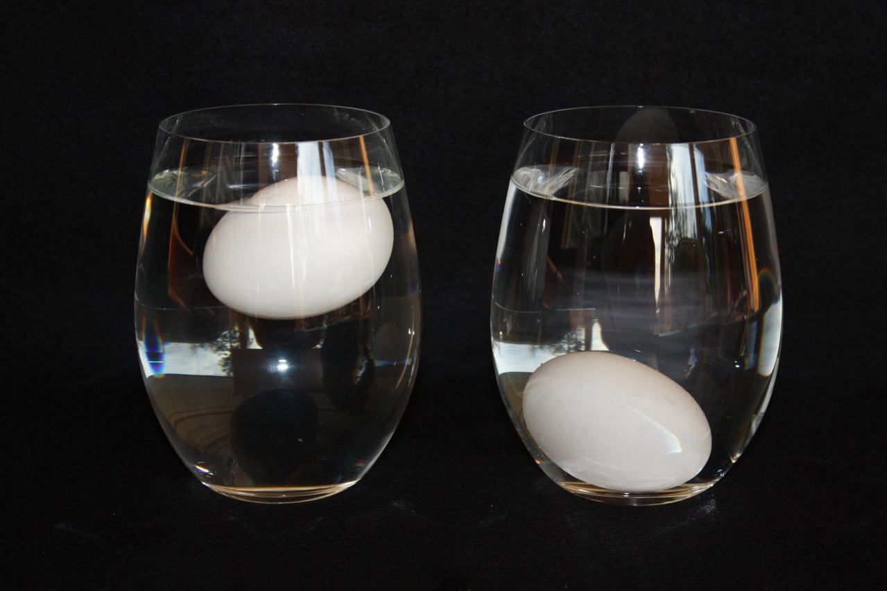

Grains itself can last 3 to 6 months. However shelfed bread only lasts 5 to 7 days and becomes stale .It is still edible just not pleasetn to eat.
Therefore you place water over the enitre loaf and place in oven at 300°F for 15 minutes or until the bread is soft and not soggy.The bread will only stay soft for a few hours.
You can do the same tip with cereal,crackers,and popcorn.
When milk is expired it will emite a strange odor ,if not its best to make sure it is safe to drink.
You can boil 1/2 of milk if it curdles and becomes a cheese texture throw it away.
If you have eggs in no carton ,it can be difficult to know if they are expired.
Therfore you can place one egg (Don't Crack!)in a clear cup filled with water. If the egg floats it is expired or spoiled,
however if it sinks it is a very fresh egg.

When vegtebales expire they mold or have a bad odor to prevent vegetables from expiring qucikly you can preserve it by drying your vegetables.
Another thing you can do to preserve your food is blanching wich is light bowling of you fruits and vegetbles. The procces of blanching destroys enzymes that causes the vegetables and fruits to deteriorate.
If you have an old stale celrary in fridge and want to throw it away,you can cut the stump on the bottom. You can replant the stump and grow your own celary stalk.